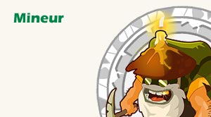
Etape 1 : Avant de commencer
Le métier de mineur
s'apprend auprés du PNJ en -1/5, il permet de récolter des pierres, de créer des alliages ainsi que de polir les pierres précieuses.
Une fois le métier appris auprès du PNJ il faudra lui
acheter une pioche à 150k/u puis l'équiper.
Miner est une philosophie, c'est accepter de passer des heures dans des grottes obscures afin de prélever de la terre quelques pierres, c'est donner des coups de pioche encore et encore pour progresser un peu plus...
Il y a généralement beaucoup de mineur et au final peu de mine, c'est donc un métier un peu compliqué à monter mais qui rapporte pas mal, je vous explique ici comment monter un mineur car c'est un metier qui devient surtout intérressant une fois niveau 100.
Vous avez appris le métier, maintenant il faut s'équiper un minimum sinon vous n'allez pas arreter les allez-retour couteux. Vous avez besoin de pod ! Donc achetez vous :
- une ceinture bouftou (max 500 pod)
- un sac de petit aventurier (max 200 pod) ou si vous etes plus que level 60 un sac grand aventurier/sac cawotte (max 1000 pod)
- un familier bworky (max 1000 pod) ou si vous etes plus que level 60 une dinde level 100 (entre 650 et 3050 pod max suivant race), en plus la dinde permet de se deplacer plus rapidement dans les mines.
Etape 2 : Level 1 à 10
Au début vous ne pourrez miner que du Fer, les bonnes mines pour commencer qui contiennent pas mal de fer sont celles
en 0/-3 et -2/4 ainsi que les 2 en 1/32 et -1/33. Si vous voulez monter rapidement le métier il va falloir changer de mine souvent, rester toujours dans la meme mine en pensant en plus qu'elle vous appartient est stupide et va vous ralentir, vous enervez dés qu'un aure mineur va venir dans la mine, donc si la mine est vide on bouge ailleurs. Le minerai met entre 5 et 20 minutes à réapparaitre. Vous gagnez 10xp à chaque fer miné. Inutile de le garder, vendez le vous gagnerez vos premiers kamas grâce à ce métier.
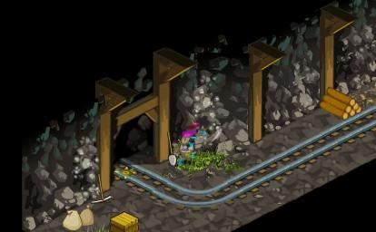
Etape 3 : Level 10 à 20
Vous pouvez maintenant miner en plus des pierres cuivrées, cela vous rapporte 15 xp à chaque fois (donc preferez le cuivre au fer si vous avez le choix). Continuez de vendre le fer (par lot de 100 ca part trés bien) mais garder en banque le cuivre, vous en aurez besoin ensuite. Au niveau des mines pour le cuivre (et fer que vous continuez de miner hein !) il y a celle en 5/19, l'entrée est un peu cachée :
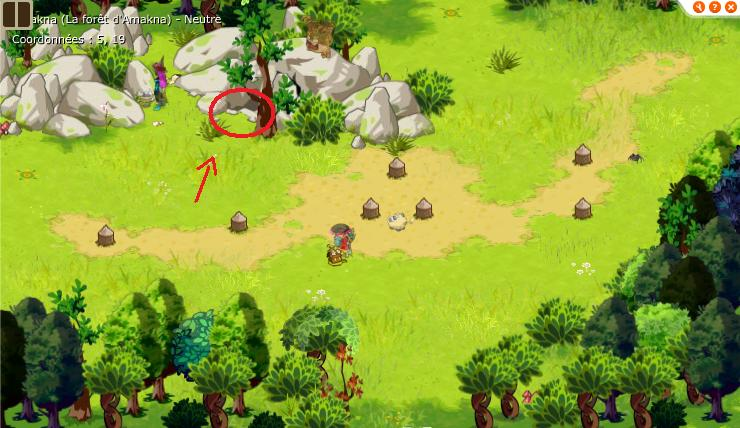
Il y a également la grande mine prés du temple sadida en -3/9, pareil l'accés est caché :
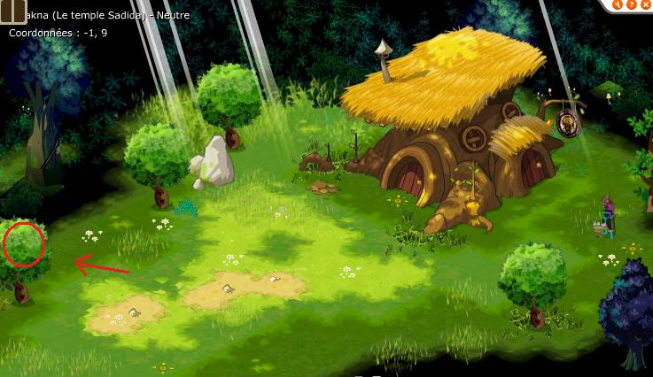
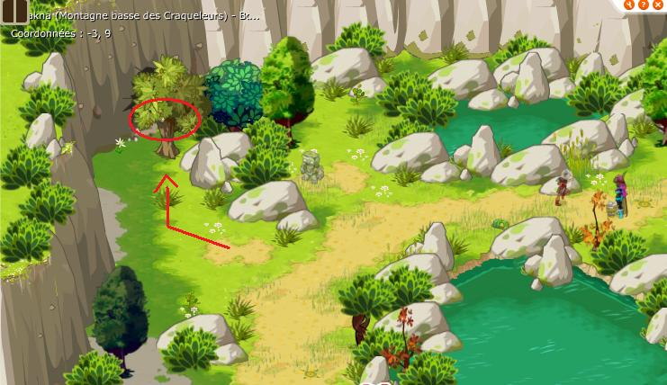
Ensuite viennent les mines du territoire porcos en 1/32 et -1/33. Bonne balade faut courir ;)
Plus vous progresserez dans le métier plus vous irez vite à récolter et plus vous récupererez de minerai à chaque fois.
Vous aurez peut etre remarqué que vous pouvez fabriquer de l'aluminite avec 10 fer + 10 cuivre, ce n'est pas du tout rentable d'en faire, ca ne rapporte que 10xp et vous avez de grande chance de rater en plus...
Etape 4 : Level 20 à 30
A partir du level 20 vous pouvez
être attaquer par des protecteurs de ressources (cela arrive environ une fois sur 40-50), à la fin de chaque combat vous recuperez un sac qui contient 50 unités du minerai que vous étiez en train de récolter, des kamas facile en gros.
Au level 20 vous pourrez miner en plus du bronze, qui vous rapportera lui 20xp, il y en a en trés grande quantité et souvent laissé libre par les mineurs 100 dans la mine des landes de sidimote en -25/24, dans les mines que vous connaissez déjà et dans celle de la bordure de brakmar en -25/46.
Vous pouvez utiliser les transporteurs dans les mines pour aller plus vite si vous etes feignants, mais il faudra etre capable de tuer 2 mineurs sombres et cela vous amene un peu n'importe ou (parfois meme dans la mine ou vous l'avez pris...)
Un nouvel alliage est disponible mais toujours pas rentable de le faire, par contre une recette
de potion de métal liquide va vous aider à progresser plus vite. La technique c'est vendre le fer pour avoir des kamas pour acheter le bocal (100k/u au pnj en 4/-18 ou en -1/16) et vous utilisez le cuivre et le bronze que vous recoltez. Cela rapporte 25xp à chaque recette, malheureusement la potion ne vaut pas trés cher mais vendez les quand meme. Mais vous inquiéter pas, plus vous avancer dans le métier plus il va vous rapporter de kamas, là le but c'est d'atteindre le level 100.
Si vous avez du bronze en trop par rapport au cuivre, vendez le mais il ne rapporte pas grand chose.
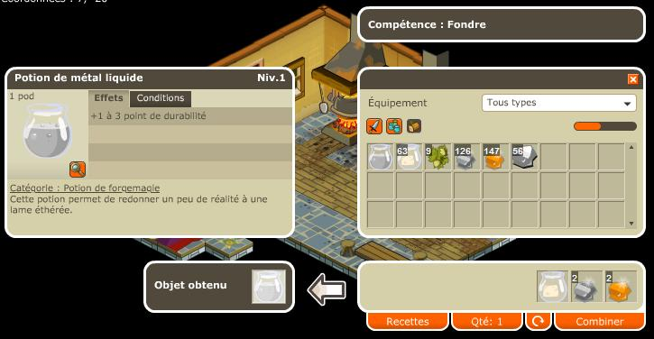
Etape 5 : Level 30 à 40
Nouveau minerai du Kobalte, c'est un minerai rare qu'on trouve en 5/19, -25/24, -3/9 et -25/46, gardez le impérativement pour plus tard si vous souhaitez passer 100 assez rapidement, vous en aurez besoin. Il rapporte 25xp.
Continuez à récolter de tout, vendez le fer, avec le bronze et le cuivre faites des potions de métal liquide, gardez le kobalte. Les alliages ne sont pas rentables pour le moment (40 minerai pour 50 xp, ridicule).
Etape 6 : Level 40 à 50
Nouveau minerai du Manganése, , c'est un minerai rare qu'on trouve en 5/-19, -25/46 (brakmar donc pas super pratique mais à la fois il y a pas mal de minerai sympa là bas) et -3/9 uniquement, gardez le impérativement pour plus tard si vous souhaitez passer 100 assez rapidement, vous en aurez besoin. Il rapporte 30xp.
Continuez à récolter de tout, vendez le fer, avec le bronze et le cuivre faites des potions de métal liquide, gardez le kobalte et le manganése. Les alliages ne sont pas rentables pour le moment (50 minerai pour 100 xp, ridicule).
Avec le level 40 vous avez de nouvelles recettes, notamment la possibilité de
polir des pierres (10 pierres brutes + 10 eaux) avec 99% de réussite comme les mineurs 100, à vous les premiers clients, par contre c'est du 2 cases donc 10xp, ca aidera pas trop à progresser dans le métier. c'est une étape assez dur mais dites vous que la prochaine étape vous permettra de progresser bien plus vite. Vous devriez quand meme commencer maintenant à miner plus de fer donc pouvoir gagner quelques kamas.
Vous pourrez également faire des runes pour les métiers et ainsi être reférencé dans les livres d'artisans. Vous pourrez enfin faire des lingot d'or mais c'est assez inutile.
Si vous avez déjà un alchimiste n'hésitez pas à acheter de l'or pour faire des runes de signatures, ca rapporte 10 xp facilement.
Etape 7 : Level 50 à 60
Nouveaux minerais de l'Etain et du Silicate, ils rapportent 35xp. Pour le Silicate il faudra être aligné (ange ou démon) car il ne se trouve que dans la mine ouverte de la zone Feudala, ce n'est pas un minerai trés intérressant, vendez le. Pour l'Etain vous en trouverez en grande quantité dans la mine en -25/24 et en -3/9, de même, vendez le.
Continuez à récolter de tout, vendez le fer, silicate et etain, avec le bronze et le cuivre faites des potions de métal liquide, gardez le kobalte et le manganése. Les alliages ne sont toujours pas rentables.
Si votre priorité est de monter level 100 vous pouvez acheter un peu de cuivre pour faire des potions métal liquide, vous devriez normalement avoir du bronze en surplus.
Etape 8 : Level 60 à 70
Nouveau minerai de l'argent, il rapporte 40xp. Vous en trouverez en -3/9 et surtout en -25/24. Gardez le on va en avoir besoin prochainement.
C'est trés tentant de faire du kouartz comme alliage mais résistez ! Dans 20 levels et pour 10 minerai par alliage de plus vous allez gagner 500 xp au lieu de 250. Les derniers niveaux sont vraiment long si vous dépensez votre minerai maintenant pour les alliages. Donc on continu comme avant, on garde tout sauf le fer / silicate et étain que l'on peut vendre. On continu à faire des supers potions de métal liquide qu'on revend aussi.
Etape 9 : Level 70 à 80
Nouveau minerai du bauxite, il rapporte 45xp. Vous en trouverez en -25/24, en -25/46 et en -2/-5 (nouvelle mine). Vendez le, il rapporte pas mal en plus.
Prévoyez qu'au level 80 on attaque les alliages donc gardez du fer / cuivre / etain pour pouvoir faire les alliages une fois level 80.
Etape 10 : Level 80 à 100
Nouveau minerai de l'or, il rapporte 50xp. Vous en trouverez en -25/24 et en -2/-5 principalement. Vendez le.
Allez on se lache, faites de super allez retour banque-atelier, on craft des alliages pour 500 xp la recette. Vendez la kriptonite ensuite.
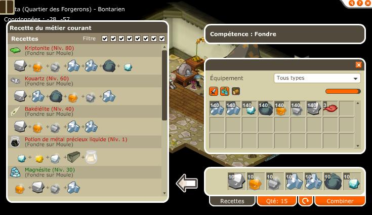
On ne craft plus de potion métal liquide, ca ne rapporte pu d'xp. Revendez le minerai en trop et achetez ceux qui vous manquent pour faire des Kriptonite. Les 5 derniers levels sont les plus durs mais courage vous y etes presque.
Etape 11 : Level 100
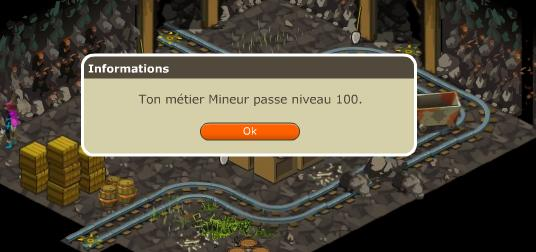
Tout d'abord félicitation !! On va pouvoir commencer à gagner de l'argent maintenant.
Nouveau minerai du dolomite, il rapporte... on s'en fou en faite de combien d'xp il rapporte on est 100 !! Il faudra être aligné (ange ou démon) car il ne se trouve que dans la mine ouverte de la zone Feudala. Vendez le, vendez tout d'ailleurs ;)
Le gros bonus c'est déjà le nombre de minerai qu'on récolte maintenant qu'on est 100, ca fait plaisir.
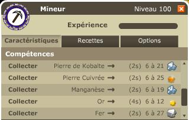
Et vous avez gagnez en plus 1000 pods, toujours utile. A vous de voir si vous vendez le minerai directement, si vous preferez vendre des alliages (un mix des 2 est conseillé) ou si tout simplement vous preferez garder votre minerai pour monter d'autres métiers !
Recettes
| Mineur lvl 1 |
Fer |
| 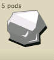 |
Quantités récoltées : |
XP gagnées : |
lvl 1 :1 à 2
lvl 10 :1 à 4
lvl 20 : 1 à 6
lvl 30 : 1 à 8
lvl 40 : 1 à 10
lvl 50 : 1 à 12
lvl 60 : 1 à 14
lvl 70 : 1 à 16
lvl 80 : 1 à 18
lvl 90 : 1 à 20
lvl 100 : 6 à 27 |
lvl 5 : 1 à 3
lvl 15 : 1 à 5
lvl 25 : 1 à 7
lvl 35 : 1 à 9
lvl 45 : 1 à 11
lvl 55 : 1 à 13
lvl 65 : 1 à 15
lvl 75 : 1 à 17
lvl 85 : 1 à 19
lvl 95 : 1 à 21 |
10 xp |
| Mineur lvl 10 |
Pierre Cuivrée |
| 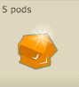 |
Quantités récoltées : |
XP gagnées : |
lvl 10 : 1 à 2
lvl 20 : 1 à 4
lvl 30 : 1 à 6
lvl 40 : 1 à 8
lvl 50 : 1 à 10
lvl 60 : 1 à 12
lvl 70 : 1 à 14
lvl 80 : 1 à 16
lvl 90 : 1 à 18
lvl 100 : 6 à 25 |
lvl 15 : 1 à 3
lvl 25 : 1 à 5
lvl 35 : 1 à 7
lvl 45 : 1 à 9
lvl 55 : 1 à 11
lvl 65 : 1 à 13
lvl 75 : 1 à 15
lvl 85 : 1 à 17
lvl 95 : 1 à 19 |
15 xp |
| Mineur lvl 20 |
Bronze |
| 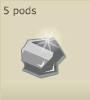 |
Quantités récoltées : |
XP gagnées : |
lvl 20 : 1 à 2
lvl 30 : 1 à 4
lvl 40 : 1 à 6
lvl 50 : 1 à 8
lvl 60 : 1 à 10
lvl 70 : 1 à 12
lvl 80 : 1 à 14
lvl 90 : 1 à 16
lvl 100 : 6 à 23 |
lvl 25 : 1 à 3
lvl 35 : 1 à 5
lvl 45 : 1 à 7
lvl 55 : 1 à 9
lvl 65 : 1 à 11
lvl 75 : 1 à 13
lvl 85 : 1 à 15
lvl 95 : 1 à 17 |
20 xp |
| Mineur lvl 30 |
Kobalte |
| 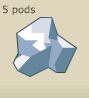 |
Quantités récoltées : |
XP gagnées : |
lvl 30 : 1 à 2
lvl 40 : 1 à 4
lvl 50 : 1 à 6
lvl 60 : 1 à 8
lvl 70 : 1 à 10
lvl 80 : 1 à 12
lvl 90 : 1 à 14
lvl 100 : 6 à 21 |
lvl 35 : 1 à 3
lvl 45 : 1 à 5
lvl 55 : 1 à 7
lvl 65 : 1 à 9
lvl 75 : 1 à 11
lvl 85 : 1 à 13
lvl 95 : 1 à 15 |
25 xp |
| Mineur lvl 40 |
Manganése |
| 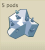 |
Quantités récoltées : |
XP gagnées : |
lvl 40 : 1 à 2
lvl 50 : 1 à 4
lvl 60 : 1 à 6
lvl 70 : 1 à 8
lvl 80 : 1 à 10
lvl 90 : 1 à 12
lvl 100 : 6 à 19 |
lvl 45 : 1 à 3
lvl 55 : 1 à 5
lvl 65 : 1 à 7
lvl 75 : 1 à 9
lvl 85 : 1 à 11
lvl 95 : 1 à 13 |
30 xp |
| Mineur lvl 50 |
Etain |
| 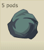 |
Quantités récoltées : |
XP gagnées : |
lvl 50 : 1 à 2
lvl 60 : 1 à 4
lvl 70 : 1 à 6
lvl 80 : 1 à 8
lvl 90 : 1 à 10
lvl 100 : 6 à 17 |
lvl 55 : 1 à 3
lvl 65 : 1 à 5
lvl 75 : 1 à 7
lvl 85 : 1 à 9
lvl 95 : 1 à 11 |
35 xp |
| Mineur lvl 50 |
Silicate |
| 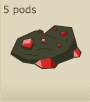 |
Quantités récoltées : |
XP gagnées : |
lvl 50 : 1 à 2
lvl 60 : 1 à 4
lvl 70 : 1 à 6
lvl 80 : 1 à 8
lvl 90 : 1 à 10
lvl 100 : 6 à 17 |
lvl 55 : 1 à 3
lvl 65 : 1 à 5
lvl 75 : 1 à 7
lvl 85 : 1 à 9
lvl 95 : 1 à 11 |
35 xp |
| Mineur lvl 60 |
Argent |
| 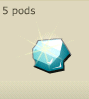 |
Quantités récoltées : |
XP gagnées : |
lvl 60 : 1 à 2
lvl 70 : 1 à 4
lvl 80 : 1 à 6
lvl 90 : 1 à 8
lvl 100 : 6 à 15 |
lvl 65 : 1 à 3
lvl 75 : 1 à 5
lvl 85 : 1 à 7
lvl 95 : 1 à 9 |
40 xp |
| Mineur lvl 70 |
Bauxite |
| 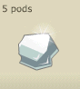 |
Quantités récoltées : |
XP gagnées : |
lvl 70 : 1 à 2
lvl 80 : 1 à 4
lvl 90 : 1 à 6
lvl 100 : 6 à 13 |
lvl 75 : 1 à 3
lvl 85 : 1 à 5
lvl 95 : 1 à 7 |
45 xp |
| Mineur lvl 80 |
Or |
| 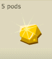 |
Quantités récoltées : |
XP gagnées : |
lvl 80 : 1 à 2
lvl 90 : 1 à 4
lvl 100 : 6 à 12 |
lvl 85 : 1 à 3
lvl 95 : 1 à 5 |
50 xp |
| Mineur lvl 100 |
Dolomite |
| 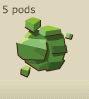 |
Quantités récoltées : |
XP gagnées : |
| lvl 100 : 6 à 8 |
? xp |
Parrallélement au minage avec votre pioche vous pouvez également fondre des minerais afin d'obtenir des alliages :
| Mineur lvl 1 |
Aluminite |
| 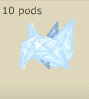 |
Recettes : |
XP gagnées : |
10 Fer
10 Cuivre |
10 xp |
| Mineur lvl 10 |
Ebonite |
| 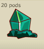 |
Recettes : |
XP gagnées : |
10 Fer
10 Cuivre
10 Bronze |
25 xp |
| Mineur lvl 20 |
Magnésite |
| 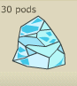 |
Recettes : |
XP gagnées : |
10 Fer
10 Cuivre
10 Bronze
10 Kobalte |
50 xp |
| Mineur lvl 40 |
Bakalélite |
| 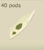 |
Recettes : |
XP gagnées : |
10 Fer
10 Cuivre
10 Bronze
10 Kobalte
10 Manganése |
100 xp |
| Mineur lvl 60 |
Kouartz |
| 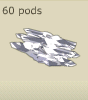 |
Recettes : |
XP gagnées : |
10 Fer
10 Cuivre
10 Bronze
10 Kobalte
10 Manganése
10 Etain |
250 xp |
| Mineur lvl 80 |
Kriptonite |
| 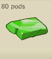 |
Recettes : |
XP gagnées : |
10 Fer
10 Cuivre
10 Bronze
10 Kobalte
10 Manganése
10 Etain
10 Argent |
500 xp |
| Mineur lvl 100 |
Kobalite |
| 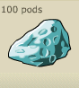 |
Recettes : |
XP gagnées : |
10 Fer
10 Cuivre
10 Bronze
10 Kobalte
10 Manganése
10 Etain
10 Argent
10 Bauxite |
1000 xp |
| Mineur lvl 100 |
Rutile |
| 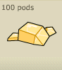 |
Recettes : |
XP gagnées : |
10 Bronze
10 Silicate
10 Kobalte
10 Argent
10 Manganése
10 Etain
10 Cuivre
10 Or |
1000 xp |
| Mineur lvl 100 |
Pyrute |
| 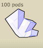 |
Recettes : |
XP gagnées : |
10 Cuivre
10 Bronze
10 Kobalte
10 Manganése
10 Dolomite
10 Etain
10 Argent
10 Bauxite |
1000 xp |
Enfin, une fois rendu au lvl 40, vous pourrez polir des pierres, au début avec peu de chance de réussite puis de plus en plus
| Mineur lvl 40 |
Rubis |
| 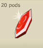 |
Recettes : |
XP gagnées : |
10 Pierre de rubis
10 Eau |
10 xp |
| Mineur lvl 40 |
Saphir |
| 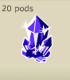 |
Recettes : |
XP gagnées : |
10 Pierre de saphir
10 Eau |
10 xp |
| Mineur lvl 40 |
Diamant |
| 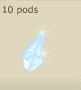 |
Recettes : |
XP gagnées : |
10 Pierre de diamant
10 Eau |
10 xp |
| Mineur lvl 40 |
Cristal |
| 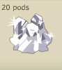 |
Recettes : |
XP gagnées : |
10 Pierre de cristal
10 Eau |
10 xp |
| Mineur lvl 40 |
Emeraude |
| 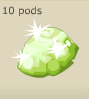 |
Recettes : |
XP gagnées : |
10 Pierre d'emeraude
10 Eau |
10 xp |
| Mineur lvl 40 |
Agathe |
| 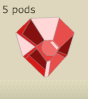 |
Recettes : |
XP gagnées : |
10 Pierre d'agathe
10 Eau |
10 xp |
| Mineur lvl 40 |
Topaze |
| 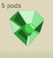 |
Recettes : |
XP gagnées : |
10 Pierre de topaze
10 Eau |
10 xp |
| Mineur lvl 40 |
Aigue-Marine |
| 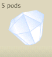 |
Recettes : |
XP gagnées : |
10 Pierre d'aigue-marine
10 Eau |
10 xp |
L'eau s'achetant à 1k/u à la taverne d'Amakna !